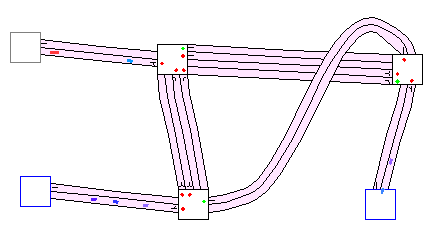

1. Editor
2. Simulator
 a. Interface
a. Interface
 b. Usage
b. Usage
 c. From sims to evals
c. From sims to evals
3. Evaluation Tools
4. An Example Session
5. Algorithms
Simulator Usage
After you've loaded a map, it will be displayed in the view, with completely empty roads and all-red traffic lights. Node ID's will be displayed next to each node. The map will be centered at the
point where map-making began in the editor.
Here, the spawning frequency and destination frequencies are displayed for edge node 0 (selected).
You may want to adjust spawn frequencies. Select the Adjust tool and click on an edge node.
Spawning frequencys for this edge node will be displayed in blue next to it, and destination frequencies from this edge node to others next ot the others (edge nodes are also all blue).
Values range between 0.0 and 1.0. Click-and-drag on an edge node to modify (left to decrease, right to increase).
Initially, destination frequencies are evenly divided for all edge nodes over all the other. You may have to tweak them to get realistic traffic (low waiting queue lengths).
You can only adjust these values for edge nodes.
Now you can make it advance one step at a time with Do One Step, or set it to run continuously with Run. Road users will flow across their lanes, and halt only at red lights or full lanes. During simulation, you may temporarily put the simulation on hold with Pause, or reset it with Stop.
The interesting part of running a simulation is changing its parameters:
- Spawning Frequencies: see above
- Traffic Controllers: Options menu (default: Random)
- Driving Policies: Options menu (default: Shortest Path, Co-learning only selectable for some traffic controllers)

Additionally, one can zoom in or out using the menu option or the Zoom Tool, and scroll the map to select the most interesting section.
Take notice that changing traffic control algorithms or driving policies while in simulation will not reset past results.
More info can be found in the Traffic Simulation section of the Example Session .